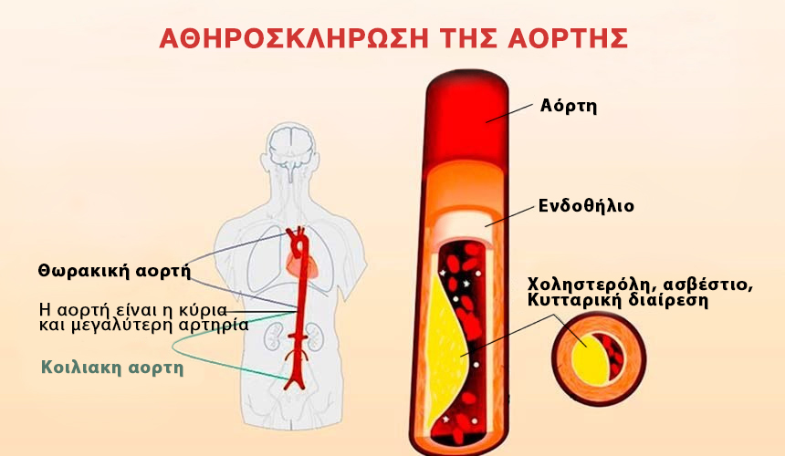
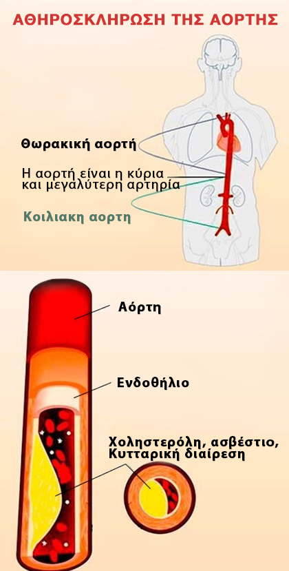
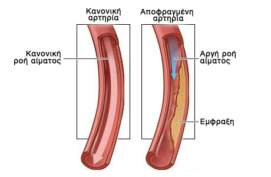
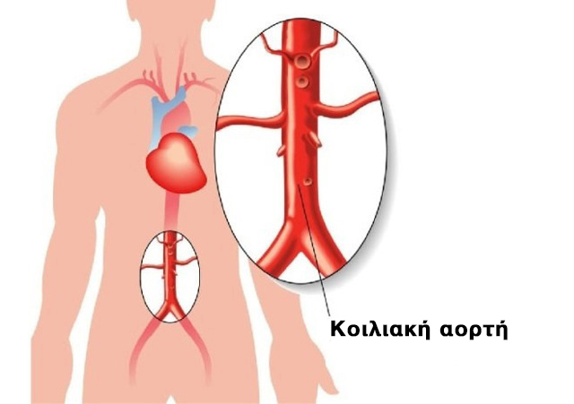
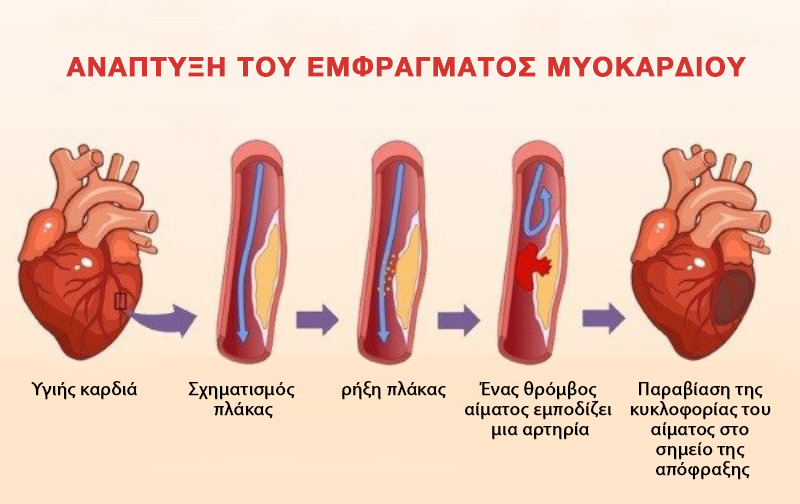
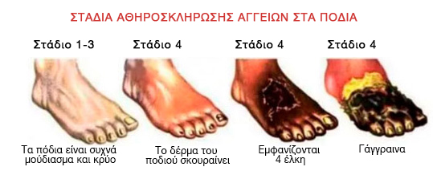
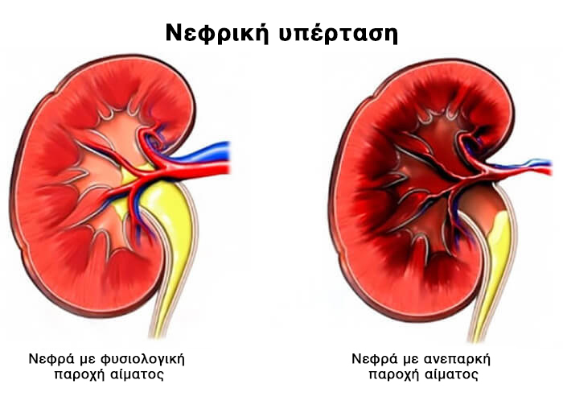
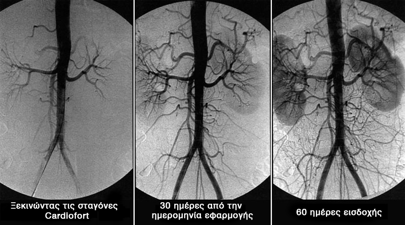
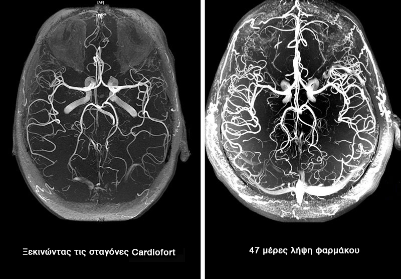

Γερμανός γιατρός εξηγήσει τους κινδύνους της υψηλής αρτηριακής πίεσης στους ηλικιωμένους
Τι είναι ιδανικό για τη διάλυση της χοληστερόλης και τη βελτίωση της κυκλοφορίας του αίματος;
 |
PROF. DR. MED. HUGO A. KATUS |

Εκατομμύρια ανθρώπους θεραπεύουν χιλιάδες διαφορετικές ασθένειες με ένα σωρό διαφορετικά φάρμακα, χωρίς καν να συνειδητοποιούν ότι η ρίζα του κακού δεν είναι εκεί που πονά. Η χοληστερίνη είναι αόρατη, συσσωρεύεται αργά, σχεδόν αθόρυβα και αόρατα, προκαλώντας ζημιές σε όλα τα ζωτικά όργανα.
Με τη συσσώρευση χοληστερόλης στο σώμα, ο κίνδυνος εμφάνισης ασθενειών που σχετίζονται με στένωση ή απόφραξη των αιμοφόρων αγγείων αυξάνεται όπως μια χιονοστιβάδα.
Ποιοι είναι οι κίνδυνοι των πλακών χοληστερόλης;
Η συσσώρευση χοληστερόλης στα τοιχώματα των αιμοφόρων αγγείων ξεκινά ενεργά μετά από τα σαράντα και μετά από τα πενήντα - με εκπληκτικό ρυθμό. Τα προκύπτοντα εμπόδια «χοληστερόλης» επηρεάζουν τη ροή του αίματος. Σταδιακά σχηματίζεται μια αθηροσκληρωτική πλάκα και η διάμετρος του αγγείου γίνεται όλο και μικρότερη. Αυτό αυξάνει σημαντικά τον κίνδυνο θρόμβου στα αιμοφόρα αγγεία. Όταν συμβεί αυτό, το αίμα σταματά εν μέρει ή πλήρως την κυκλοφορία στο ένα ή στο άλλο όργανο, γεγονός που οδηγεί σε σοβαρή διαταραχή της λειτουργίας του ή ακόμα το θάνατο ενός ατόμου.

Ο κίνδυνος κρύβεται επίσης στην ασυμπτωματική πορεία της νόσου. Η κατάσταση των αγγείων επιδεινώνεται συνεχώς και οι διαταραχές θα εμφανίζονται μόνο όταν τα αγγεία έχουν ήδη διχοτομηθεί. Είναι αδύνατο να πούμε ακριβώς πώς θα εκδηλωθεί η αθηροσκλήρωση. Όλα εξαρτώνται από το ποιο όργανο έχει στερηθεί την απαραίτητη διατροφή του. Τις περισσότερες φορές, η αθηροσκλήρωση επηρεάζει τα αγγεία της καρδιάς, των εντέρων, του εγκεφάλου, της αορτής, των νεφρών, των κάτω άκρων και του παγκρέατος.
Η συσσώρευση χοληστερόλης (αθηροσκλήρωση) έχει επιζήμια επίδραση σε όλα τα όργανα και τα συστήματα του σώματος. Το μόνο ερώτημα είναι ποιο όργανο θα είναι ο «αδύναμος κρίκος» και δεν θα επιβιώσει.
Οι 7 στόχοι της χοληστερόλης
Αθηροσκλήρωση της αορτής
Η αθηροσκλήρωση της αορτής είναι μια σοβαρή βλάβη της μεγαλύτερης αρτηρίας στο σώμα. Η αορτή μοιάζει με κορμό από τον οποίο διαχωρίζονται άλλα μικρότερα αγγεία.
Η αορτή περιλαμβάνει 2 ενότητες:
- θωρακική αορτή
- Κοιλιακή αορτή
Η θωρακική περιοχή παρέχει αίμα στα όργανα που βρίσκονται στο στήθος, καθώς και στο κεφάλι και το λαιμό.
Η κοιλιακή αορτή κατευθύνει το αίμα σε όργανα που βρίσκονται στην κοιλιά και στα κάτω άκρα.

Η ασθένεια αναπτύσσεται σε 2 στάδια:
- Στο αρχικό στάδιο, δεν υπάρχουν συμπτώματα της νόσου. Αλλά κάνοντας τις απαραίτητες εξετάσεις μπορούν να εντοπιστούν οι επιπλοκές που υπάρχουν ήδη.
- Η κλινική περίοδος συνοδεύεται από έντονα σημεία της νόσου.
Αθηροσκλήρωση της θωρακικής αορτής
Στο αρχικό στάδιο, η παθολογία δεν συνοδεύεται από συμπτώματα. Τα πρώτα συμπτώματα είναι συνήθως πόνος στο στήθος, που είναι διαλείπουσα. Ο πόνος μπορεί να μειωθεί, να αυξηθεί και να διαρκέσει για αρκετές ημέρες. Συνοδεύεται συχνά από αίσθημα δύσπνοιας.
Άλλα συμπτώματα περιλαμβάνουν υψηλή αρτηριακή πίεση και ανάπτυξη υπέρτασης.
Με σημαντική ζημιά στο αορτικό τόξο αναπτύσσεται δυσκολία στην κατάποση, η φωνή γίνεται βραχνή. Οι αθηροσκληρωτικές αλλοιώσεις της θωρακικής αορτής μπορεί να συνοδεύονται από την ανάπτυξη της τρίχας πάνω στο αυτί. Εμφανίζονται σαρκώδης κύστη/θηλώματα στο πρόσωπο, εμφανίζεται πρόωρο γκριζάρισμα μαλλιών.

Άλλα συμπτώματα βλάβης στη θωρακική αορτή περιλαμβάνουν:
- πόνος στον βραχίονα, το αυχενικό και την οσφυϊκή περιοχή.
- Υψηλή αρτηριακή πίεση
- κτύπημα ανάμεσα στα πλευρά από τη δεξιά πλευρά του στήθους.
- θόρυβος στο κεφάλι
- ζαλάδα
- πόνος στον αυχένα στην προσπάθεια να γυρίσετε το κεφάλι σας.
Στο πλαίσιο της ανεπαρκούς παροχής αίματος στην καρδιά, αναπτύσσονται οι ακόλουθες παθολογίες:
- αρρυθμία
- καρδιακή ανεπάρκεια
- στηθάγχη
- έμφραγμα
Η βλάβη της θωρακικής αορτής συχνά συνδυάζεται με αθηροσκληρωτική στεφανιαία νόσο και εγκεφαλοαγγειακή βλάβη.
Αθηροσκλήρωση της κοιλιακής αορτής

Η αθηροσκληρωτική βλάβη της κοιλιακής αορτής συνοδεύεται από διαταραχή του πεπτικού συστήματος και εκδηλώνεται με τα ακόλουθα συμπτώματα:
- Το κοιλιακό άλγος έχει παροξυσμικής φύσης χαρακτηριστικά . Συχνά ο ασθενής δεν μπορεί να υποδείξει ακριβώς πού βρίσκεται η θέση του πόνου.
- Δυσκοιλιότητα
- Διάρροια
- Καούρα
- Ρέψιμο, πικρία στο στόμα
- Θρόμβωση σπλαχνικής αρτηρίας. Μια επικίνδυνη επιπλοκή που μπορεί να αποβεί μοιραία. Συνοδεύεται από νέκρωση εντερικών βρόχων και εκτεταμένη φλεγμονή. Η κατάσταση συνοδεύεται από πολύ σοβαρό πόνο που δεν μπορεί να εξαλειφθεί με τη βοήθεια παυσίπονων.
Ως αποτέλεσμα του σχηματισμού πλακών σε αυτήν την περιοχή, υπάρχει έλλειψη της παροχής του αίματος στα πυελικά όργανα. Οι επιπλοκές που εμφανίζονται στη συνέχεια, νεφρική ανεπάρκεια, ασθένειες των σπλαχνικών αρτηριών.
Εγκεφαλικά αγγεία
Η χοληστερόλη, η οποία οδηγεί σε εγκεφαλική αθηροσκλήρωση, καταστρέφει τόσο τα ενδοκρανιακά όσο και τα εξωκρανιακά αγγεία. Η ένταση των παθολογικών συμπτωμάτων σχετίζεται άμεσα με τον βαθμό και τη θέση των βλαβών που έχουν προκύψει.
Εκτός από την πιο επικίνδυνη επιπλοκή του εγκεφαλικού, μπορεί κανείς να παρατηρήσει την αναστολή της δραστηριότητας του κεντρικού νευρικού συστήματος, την ανάπτυξη ψυχικών διαταραχών και την επιδείνωση της όρασης και της μνήμης.

Τα πρώτα σημάδια εμφανίζονται ήδη στην ηλικία των 40-45 ετών.
Σε αυτό το στάδιο εκδηλώνεται με " Ισχαιμικές κρίσεις ", συνοδεύεται από μειωμένη ευαισθησία, μειωμένο συντονισμό, παθολογίες όρασης, ακοής και ομιλίας. Παρά τη σοβαρότητα των συμπτωμάτων, κατά τη διάρκεια αυτής της περιόδου είναι βραχύβια, αναστρέψιμα και εξαφανίζονται μόνα τους μετά από έναν καθαρισμό των αγγείων με θρεπτικά φάρμακα.
Οι σοβαρές αθηροσκληρωτικές βλάβες μπορεί να οδηγήσουν σε εγκεφαλικό επεισόδιο, δηλαδή νέκρωση του εγκεφαλικού ιστού. Τα συμπτώματα είναι τα ίδια με την προηγούμενη περίπτωση, αλλά δεν υπάρχει σημαντική βελτίωση μετά τη νέκρωση.
Ο εγκέφαλος είναι επίσης υπεύθυνος για την εκτέλεση υψηλότερων νοητικών λειτουργιών. Επομένως, ο σχηματισμός πλακών οδηγεί επίσης σε επιδείνωση της νοημοσύνης και της μνήμης, σε αλλαγή χαρακτήρα (αστάθεια διάθεσης, ιδιοτροπίες, τεμπελιά). Έλλειψη θεραπευτικών μέτρων για την απελευθέρωση των αγγείων από πλάκα, μια τέτοια βλάβη οδηγεί στην ανάπτυξη άνοιας, νόσου του Αλτσχάιμερ. Τέτοιες επιπλοκές είναι επικίνδυνες και μπορούν να οδηγήσουν σε αναπηρία ή θάνατο.
Υπάρχουν 2 τύποι εγκεφαλικού επεισοδίου:
- ισχαιμικό εγκεφαλικό επεισόδιο
- αιμορραγικό εγκεφαλικό επεισόδιο
Το εγκεφαλικό επεισόδιο δεν σχετίζεται πλέον με τα γηρατειά. Η ισχαιμία εμφανίζεται λόγω της απόφραξης της αγγειακής κλίνης από έναν θρόμβο, η αιτία της αιμορραγίας είναι η ρήξη των αγγείων του εγκεφάλου.
Καρδιά
Μία από τις αιτίες θανάτου ασθενών με καρδιαγγειακές παθήσεις στο πλαίσιο της συσσώρευσης χοληστερόλης στα αγγεία είναι η απόφραξη της κύριας στεφανιαίας αρτηρίας.
Συνδέονται με αυτήν την αλλοίωση ασθένειες όπως η ισχαιμική καρδιακή νόσος, η στηθάγχη και το έμφραγμα του μυοκαρδίου.
Η ισχαιμική καρδιακή νόσος είναι μια σοβαρή παθολογία της καρδιάς, η οποία είναι ένα ολόκληρο σύμπλεγμα διαταραχών. Περιλαμβάνει στηθάγχη, έμφραγμα του μυοκαρδίου, καρδιοσκλήρωση.

Τις περισσότερες φορές, η στεφανιαία νόσος εκδηλώνεται από στηθάγχη. Σε πρώιμο στάδιο, οι εκδηλώσεις του με τη μορφή πόνου στο στήθος εμφανίζονται μόνο κατά τη διάρκεια σωματικής άσκησης. Αυτό είναι λογικό, καθώς σε κατάσταση ηρεμίας απαιτείται λιγότερο οξυγόνο για να λειτουργήσει η καρδιά και με έντονη δραστηριότητα, αυτές οι ανάγκες αυξάνονται. Μια παρόμοια αντίδραση μπορεί να είναι το άγχος, η συναισθηματική δυσφορία. Με την ανάπτυξη της αθηροσκλήρωσης και την αύξηση της επικάλυψης στη διάμετρο του αγγειακού στρώματος, η ισχαιμική νόσος γίνεται όλο και πιο έντονη. Στα μεταγενέστερα στάδια της νόσου, οποιαδήποτε κίνηση του ασθενούς προκαλεί πόνο.
Τα κλασικά σημάδια στηθάγχης περιλαμβάνουν:
- την εμφάνιση του πόνου τόσο υπό την επίδραση του στρες όσο και σε κατάσταση ηρεμίας.
- ο πόνος γίνεται αισθητός πίσω από το στέρνο, μπορεί να περάσει στον ώμο (αριστερά), ωμοπλάτη, βραχίονα. Επιπλέον, η ένταση
- Ο πόνος σχετίζεται άμεσα με τη σοβαρότητα της κρίσης.
- οξύς, πιεστικός πόνος
- μπορείτε να σταματήσετε την κρίση παίρνοντας ένα δισκίο νιτρογλυκερίνης.
- η διάρκεια της κρίσης θα μειωθεί: όχι περισσότερο από 5 λεπτά.
Διαφορές μεταξύ καρδιακής προσβολής και στηθάγχης
- πόνος πολύ υψηλής έντασης
- η διάρκεια της κρίσης είναι τουλάχιστον 20 λεπτά
- η νιτρογλυκερίνη δεν βοηθά στο έμφραγμα του μυοκαρδίου.
- οι επώδυνες αισθήσεις είναι διάσπαρτες.
Η πλάκα που προκαλείται από τα υψηλά επίπεδα χοληστερόλης μπορεί να οδηγήσει σε ξαφνικό θάνατο του ασθενούς. Αυτή η κατάσταση αναπτύσσεται όταν, λόγω της βλάβης στην παροχή αίματος, ο καρδιακός ρυθμός πρώτα αλλάζει και μετά η καρδιά σταματά να χτυπά.
Όλες οι αγγειακές παθήσεις της καρδιάς είναι σοβαρές και επικίνδυνες. Χωρίς την πλήρη λειτουργία της καρδιάς, υπόλοιπα όργανα δεν μπορούν να λειτουργήσουν κανονικά. Η αθηροσκλήρωση των αγγείων της καρδιάς μπορεί επίσης να οδηγήσει σε έμφραγμα του μυοκαρδίου. Μια καρδιακή προσβολή προκαλείται από μια ρήξη της πλάκας και απόφραξη του αγγείου από έναν θρόμβο αίματος. Ως αποτέλεσμα, το αίμα σταματά να ρέει σε μια συγκεκριμένη περιοχή του καρδιακού μυός και στη συνέχεια πεθαίνει.

Μετά την ανάπτυξη βλάβης της συσταλτικότητας του καρδιακού μυός, μέσα σε λίγες ώρες ή ημέρες οδηγεί σε θάνατο. Ωστόσο, ακόμη και αν ένα άτομο διασώθηκε, εξακολουθεί να έχει βλάβη στην παροχή του αίματος, η οποία, χωρίς να καθαρίσει τα αιμοφόρα αγγεία της χοληστερόλης, αργά ή γρήγορα θα οδηγήσει σε μια δεύτερη κρίση. Επομένως, ο καθαρισμός των αιμοφόρων αγγείων με θρεπτικά φάρμακα είναι ζωτικής σημασίας για ασθενείς με καρδιακή προσβολή.
Επιπλέον, η υπέρταση αναπτύσσεται στο πλαίσιο των κυκλοφοριακών διαταραχών. Αυτό συνοδεύεται από δυσλειτουργία της καρδιάς, παθολογικών προβλημάτων στην λειτουργία του κεντρικού νευρικού συστήματος, των νεφρών.
Η υπέρταση εμφανίζεται επίσης στο πλαίσιο βλαβών του εγκεφάλου, των νεφρών και των περιφερειακών αγγείων. Με την παθολογία του εγκεφάλου, εκδηλώνεται ως εξασθενημένη συνείδηση, απώλεια όρασης και μειωμένη νεφρική λειτουργία, η οποία οδηγεί σε νεφρική ανεπάρκεια.
Αγγεία κάτω άκρων
Το σύμπλεγμα συμπτωμάτων βλαβών των κάτω άκρων που οδηγούν σε αποθέσεις χοληστερόλης περιλαμβάνει:
- ευαισθησία των κάτω άκρων στο κρύο
- σπασμοί
- κούτσαμα
- "τροφικά έλκη, αγγειακό δίκτυο" "και" αστεράκια "" που προκύπτουν μετά από δερματικές βλάβες. "
- φλεβική θρόμβωση
- πόνος που μπορεί να εμφανιστεί τόσο σε κατάσταση δραστηριότητας όσο και σε ηρεμία (μπορεί να ποικίλει σε ένταση).
- καταστροφή ιστού χόνδρου, ανάπτυξη αρθρώσεων.
Εκτός από τον πόνο, υπάρχουν διαταραχές του μυοσκελετικού συστήματος. Οι εκδηλώσεις προκύπτουν κατ 'αναλογία με διαταραχές της καρδιάς: στο αρχικό στάδιο, ο πόνος εμφανίζεται μόνο με δυνατή σωματική άσκηση, περίπατο για μεγάλες αποστάσεις . Στο τελευταίο στάδιο, ο πόνος γίνεται αφόρητος ακόμη και σε ηρεμία.

Το κούτσαμα είναι το κύριο σύμπτωμα όταν εμφανίζονται αγγειακές βλάβες. Οι επίπονες αισθήσεις εντοπίζονται κυρίως στους μύες του μηρού και των μυών.
Η ανεπαρκής παροχή αίματος στα κάτω άκρα, προκαλεί χλώμιασμα και μούδιασμα του δέρματος, τα μαλλιά στα πόδια αρχίζουν να πέφτουν. Τα προκύπτοντα έλκη είναι εξαιρετικά δύσκολο να αντιμετωπιστούν, αυτό οφείλεται στο γεγονός ότι οι αναγεννητικές διεργασίες δεν ενεργοποιούνται πλήρως λόγω της έλλειψης παροχής αίματος. Ως αποτέλεσμα αυτών των αλλαγών, αργά ή γρήγορα, ξεκινά η γάγγραινα: οι ιστοί πορεί να θεραπευτεί μόνο με ακρωτηριασμό.
Η θεραπεία περιλαμβάνει, εκτός από τη λήψη διατροφικών φαρμάκων, που έχουν σχεδιαστεί για την καταπολέμηση της αθηροσκλήρωσης, τις φυσικοθεραπείες και τις SPA περιποιήσεις.
Νεφρικές αρτηρίες
Με αθηροσκληρωτικές αλλοιώσεις των αγγείων που τροφοδοτούν τα νεφρά με τροφή, αναπτύσσεται δευτερογενής αρτηριοποίηση. Χαρακτηριστικές εκδηλώσεις είναι οίδημα, το οποίο σχηματίζεται ως αποτέλεσμα της κατακράτησης νατρίου στο σώμα, η πιο δύσκολη κατάσταση είναι η ανάπτυξη πνευμονικού οιδήματος. Μία από τις συνέπειες είναι το έμφραγμα των νεφρών. Με νεφρική βλάβη, τα συμπτώματα της νόσου δεν εκφράζονται.

Η απόφραξη της νεφρικής αρτηρίας με χοληστερόλη οδηγεί σε οξεία νεφρική ανεπάρκεια.
Αυτές είναι οι κύριες εκδηλώσεις της αθηροσκλήρωσης της νεφρικής αρτηρίας:
- υπέρταση
- οίδημα
- πόνος στην πλάτη
- αδυναμία
Πώς να απαλλαγείτε από αθηροσκληρωτικές πλάκες;
Η θεραπεία βασίζεται στον συστηματικό καθαρισμό των αιμοφόρων αγγείων. Τουλάχιστον μία φορά κάθε 5 χρόνια, ξεκινώντας από τα 40 για τους άνδρες και απο τα 45 για τις γυναίκες .
Μέχρι πρόσφατα, ήταν αδύνατο να απαλλαγούμε από προϋπάρχουσες αθηροσκληρωτικές πλάκες. η θεραπεία βασιζόταν στην επιβράδυνση του σχηματισμού νέων πλακών.
Αλλά όλα άλλαξαν με την ανακάλυψη των διατροφικών φαρμακευτικών προϊόντων.
Τα σύγχρονα μέσα καταπολέμησης των πλακών χοληστερόλης σάς επιτρέπουν να καθαρίζετε τα αιμοφόρα αγγεία στο σπίτι χωρίς την επίβλεψη ειδικών. Το κυριότερο είναι να παρατηρήσουμε με ακρίβεια τη διάρκεια της θεραπείας. Η πραγματική διάρκεια της εισαγωγής είναι 1,5 μήνες.
Εντός 1,5 μηνών, τα θρεπτικά φάρμακα αφαιρούνται από τα αγγεία, τις αρτηρίες και τα τριχοειδή αγγεία από 89% έως 97% των αποθέσεων χοληστερόλης. (Περίπου 3,7 κιλά)
Τι είναι οι σταγόνες Cardiofort;
Σταγόνες Cardiofort - η νεότερη γενιά φαρμάκων για τη θεραπεία και την πρόληψη της αγγειακής αθηροσκλήρωσης.
Οι σταγόνες Cardiofort συνδυάζουν την ασφάλεια και την υψηλή απόδοση στην καταπολέμηση των αποθέσεων χοληστερόλης.
Οι σταγόνες Cardiofort έχουν εγκριθεί για αυτοχορήγηση για τη θεραπεία της αθηροσκλήρωσης και των συνεπειών της.
Οι φυσικές σταγόνες Cardiofort από όλα τα φαρμακευτικά προϊόντα εξαλείφουν εντελώς τις παρενέργειες και τις επιπλοκές, επομένως συνιστώνται για τους ηλικιωμένους και τα άτομα με χρόνιες ασθένειες.
Πώς λειτουργούν τα διατροφικά φαρμακευτικά προϊόντα στο σώμα;
Οι σταγόνες Cardiofort λειτουργούν σε 3 στάδια:
- 1. Εξάλειψη των αποθέσεων χοληστερόλης. Διαλύουν αθηροσκληρωτικές πλάκες, θρόμβους αίματος και το ασβέστιο. Αυξάνοντας τον αυλό των αιμοφόρων αγγείων και αποκαταστούν την κυκλοφορία του αίματος.
- 2.Εξαλείφει τις συνέπειες της ανεπαρκούς κυκλοφορίας του αίματος. Ασθένειες όπως υπέρταση, πονοκέφαλοι, κιρσοί, διαβήτης τύπου 2, θρόμβωση και αιμορροΐδες θεραπεύονται πλήρως ή βελτιώνονται σημαντικά. Ο εμβοές, η ζάλη εξαφανίζονται, η οπτική οξύτητα και η σαφήνεια της σκέψης βελτιώνονται.
- 3. Βελτιώνουν την αντοχή και την ελαστικότητα των τοιχωμάτων του αγγείου. Αυτό αποτρέπει το σχηματισμό νέων πλακών και μειώνει τον κίνδυνο εγκεφαλικού επεισοδίου κατά 11 φορές.
«Cardiofort»

Οι σταγόνες "Cardiofort" "σήμερα είναι ένα σύγχρονο θρεπτικό φάρμακο 5ης γενιάς με μοναδικό αποτέλεσμα που διαλύει έως και το 97% των αποθέσεων χοληστερόλης και διπλασιάζει τον αγγειακό αυλό, αποκαθιστώντας την κυκλοφορία του αίματος."
Η δράση βασίζεται στην ικανότητα των δραστικών μορίων της ουσίας να διεισδύουν σε αθηροσκληρωτικές πλάκες μέσω της ινώδους επίστρωσης. Αυτό το αποτέλεσμα εξασφαλίζει τη διάλυση των αποθέσεων χοληστερόλης, κάτι που δεν ήταν δυνατό μέχρι πρόσφατα.
Η λήψη σταγόνες Cardiofort για 2 μήνες 2 φορές την ημέρα με άδειο στομάχι δίνει τα ακόλουθα αποτελέσματα:
- Εξαλείφει έως και 97% των αθηροσκληρωτικών πλακών.
- Ενισχύει τα τοιχώματα των αιμοφόρων αγγείων.
- Ομαλοποιεί την αρτηριακή πίεση.
- Σταθεροποιεί τα επίπεδα σακχάρου στο αίμα.
- Επαναφέρει τη λειτουργική δραστηριότητα του εγκεφάλου και του νευρικού συστήματος.
- Σταματά τη διαδικασία γήρανσης του καρδιακού μυός.
- Μειώνει τον κίνδυνο εμφράγματος του μυοκαρδίου.
- Αυξάνει το αντιοξειδωτικό φράγμα.
- Βελτιώνει τη στεφανιαία και εγκεφαλική κυκλοφορία του αίματος.
- Ομαλοποιεί την ανταλλαγή ορυκτών στον καρδιακό μυ.
Κοιτάξτε και μόνοι σας
Σταγόνες Cardiofort
Ασθενής
γυναίκα, 67 ετών. Στην αρχή της θεραπείας, παρατηρήθηκαν εκτεταμένες βλάβες της θωρακικής και κοιλιακής αορτής με αποθέσεις χοληστερόλης. Κυκλοφοριακές διαταραχές των κοιλιακών οργάνων, των πνευμόνων και των βρόγχων.
γυναίκα, 67 ετών. Στην αρχή της θεραπείας, παρατηρήθηκαν εκτεταμένες βλάβες της θωρακικής και κοιλιακής αορτής με αποθέσεις χοληστερόλης. Κυκλοφοριακές διαταραχές των κοιλιακών οργάνων, των πνευμόνων και των βρόγχων.
Σχετικές επιπλοκές:
Βαθμός υπέρτασης III, οίδημα των κάτω άκρων, κιρσούς, αρρυθμία, προ-διαβητική κατάσταση.
Βαθμός υπέρτασης III, οίδημα των κάτω άκρων, κιρσούς, αρρυθμία, προ-διαβητική κατάσταση.
Παράπονα ασθενή:
πονοκέφαλοι, ζάλη, εμβοές, πόνος και κράμπες στα πόδια, προβλήματα ύπνου, πίεση έως υπερτασική κρίση.
πονοκέφαλοι, ζάλη, εμβοές, πόνος και κράμπες στα πόδια, προβλήματα ύπνου, πίεση έως υπερτασική κρίση.
Συνταγή:
Σταγόνες Cardiofort, 2 φορές την ημέρα με άδειο στομάχι. Έλεγχος επίσκεψης μετά από 30 ημέρες και 60 ημέρες.
Σταγόνες Cardiofort, 2 φορές την ημέρα με άδειο στομάχι. Έλεγχος επίσκεψης μετά από 30 ημέρες και 60 ημέρες.
Γενικό αγγειογράφημα των αγγείων του ασθενούς

Αποτελέσματα θεραπείας:
Σύμφωνα με τα αποτελέσματα της θεραπείας με αγωγή 2 μηνών με τις σταγόνες Cardiofort, Ελήφθησαν τα ακόλουθα αποτελέσματα:
- Η αρτηριακή πίεση επέστρεψε στο φυσιολογικό 130-139 \ 85-89.
- Δεν παρατηρείται οίδημα.
- Το επίπεδο ζάχαρης δεν υπερβαίνει τα 5,5 mmol / l.
- Δεν παρατηρούνται εκδηλώσεις κιρσών.
- Η αρρυθμία δεν παρατηρείται, ο καρδιακός ρυθμός είναι 73 παλμοί / λεπτό.
- Οι πονοκέφαλοι και οι εμβοές δεν ενοχλούν μετά την πρώτη εβδομάδα λήψης του φαρμάκου.
- Ομαλοποιημένος ύπνος.
- Βελτιωμένη όραση.
- Ο γενικός τόνος και η ευεξία βελτιώθηκαν σημαντικά
Η κυκλοφορία του αίματος στον εγκέφαλο αποκαθίσταται
Ασθενής
άνδρας, 51 ετών. Στην αρχή της θεραπείας παρατηρήθηκε σημαντική απόφραξη της εγκεφαλικής κυκλοφορίας.
άνδρας, 51 ετών. Στην αρχή της θεραπείας παρατηρήθηκε σημαντική απόφραξη της εγκεφαλικής κυκλοφορίας.
Σχετικές επιπλοκές:
Υψηλή αρτηριακή πίεση, αδιαφάνεια του κερατοειδούς, οστεοχόνδρωση των τραχηλικών και θωρακικών περιοχών, χρόνια προστατίτιδα, οξείες αιμορροΐδες, υπεργλυκαιμία.
Υψηλή αρτηριακή πίεση, αδιαφάνεια του κερατοειδούς, οστεοχόνδρωση των τραχηλικών και θωρακικών περιοχών, χρόνια προστατίτιδα, οξείες αιμορροΐδες, υπεργλυκαιμία.
Παράπονο ασθενή: πονοκέφαλο
πόνος, θολή όραση, κυματισμοί στην όραση. Γενική αδυναμία και απάθεια, απροθυμία. Κακή απόδοση, αδυναμία συγκέντρωσης για μεγάλο χρονικό διάστημα, έλλειψη ενέργειας.
πόνος, θολή όραση, κυματισμοί στην όραση. Γενική αδυναμία και απάθεια, απροθυμία. Κακή απόδοση, αδυναμία συγκέντρωσης για μεγάλο χρονικό διάστημα, έλλειψη ενέργειας.
Συνταγή:
Σταγόνες Cardiofort, 2 φορές την ημέρα με άδειο στομάχι. Έλεγχος επίσκεψης μετά από 30 ημέρες και 60 ημέρες.
Σταγόνες Cardiofort, 2 φορές την ημέρα με άδειο στομάχι. Έλεγχος επίσκεψης μετά από 30 ημέρες και 60 ημέρες.

Αποτελέσματα θεραπείας:
Η θεραπεία 1,5 μηνών με σταγόνες Cardiofort έδωσε τα ακόλουθα αποτελέσματα:
- Η αρτηριακή πίεση είναι εντελώς φυσιολογική.
- Σταθερά επίπεδα ζάχαρης.
- Οι πονοκέφαλοι εξαφανίστηκαν.
- Αυξημένη αποτελεσματικότητα και δραστηριότητα.
- Η ενέργεια έχει αυξηθεί σημαντικά.
- Οι αιμορροΐδες εξαφανίστηκαν.
- Οι πόνοι στην πλάτη, το λαιμό και τις αρθρώσεις εξαφανίστηκαν.
- Βελτίωση της οπτικής οξύτητας.
- Δεν εμφανίζονται συμπτώματα προστατίτιδας.
Ένα σημαντικό μειονέκτημα του Cardiofort
Το μόνο και, στην πραγματικότητα, το κύριο μειονέκτημα Cardiofort σταγόνες - είναι η τιμή του.
Αυτό έχει νόημα επειδή τα διατροφικά προϊόντα είναι τα πιο πρόσφατα φάρμακα υψηλού κόστους. Η φυσική σύνθεση είναι πολύ απαιτητική σε συνθήκες αποθήκευσης και επεξεργασίας, γεγονός που αυξάνει σημαντικά το κόστος παραγωγής.
Στα περισσότερα φαρμακεία Cardiofort δεν παρέχεται μόνο λόγω του υψηλού κόστους. Και οι γιατροί δεν διακινδυνεύουν να συνταγογραφήσουν ένα τόσο ακριβό φάρμακο.
Ο κατασκευαστής μία φορά το χρόνο Cardiofort από κοινού με τη Διεθνή Επιτροπή Χοληστερόλης διοργανώνουν Ημέρα μπόνους... Όποιος χρειάζεται να καθαρίσει τα αιμοφόρα αγγεία του, να μειώσει το σάκχαρο στο αίμα και να μειώσει την αρτηριακή πίεση μπορεί να πάρει Cardiofort με έκπτωση.
Θυμηθείτε αυτήν την ημερομηνία:
– Αυτή είναι η Διεθνής Ημέρα κατά της Χοληστερόλης.
Αυτήν την ημέρα, μπορείτε να παραγγείλετε τις σταγόνες Cardiofort με έκπτωση, αλλά για αυτό πρέπει να πληροίτε αρκετές προϋποθέσεις.
Όροι έκπτωσης 50% στο Cardiofort:
- Μόνο για προσωπική χρήση
Αυτό είναι απαραίτητο, ώστε να μην χρειάζεται να ασχοληθείτε με μεταπωλητές που προσπαθούν να αποκτήσουν το ΠΡΟΪΟΝ σε τιμές χονδρικής και να το μεταπωλήσουν ακριβότερα. - Κάντε αίτηση μέσω του επίσημου ιστότοπου.
Η αγορά μέσω του επίσημου ιστότοπου αποτελεί εγγύηση ποιότητας και προστασίας από τους μεταπωλητές.
Μην καθυστερείτε, παραγγείλετε Cardiofort τώρα αμέσως. Επειδή την επόμενη μέρα δεν θα μπορείτε να αγοράσετε το προϊόν με έκπτωση.

ΚΡΙΤΙΚΕΣ